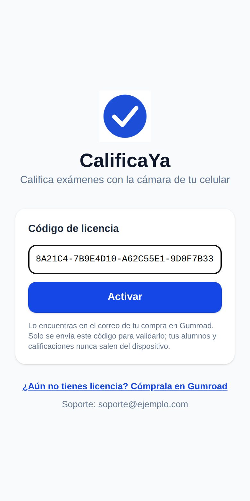
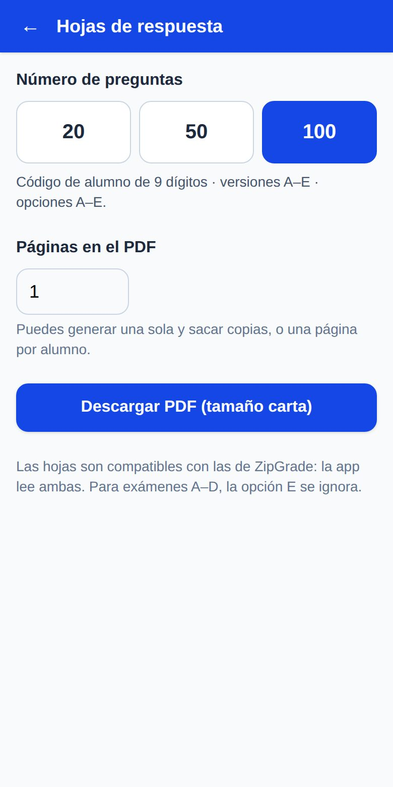
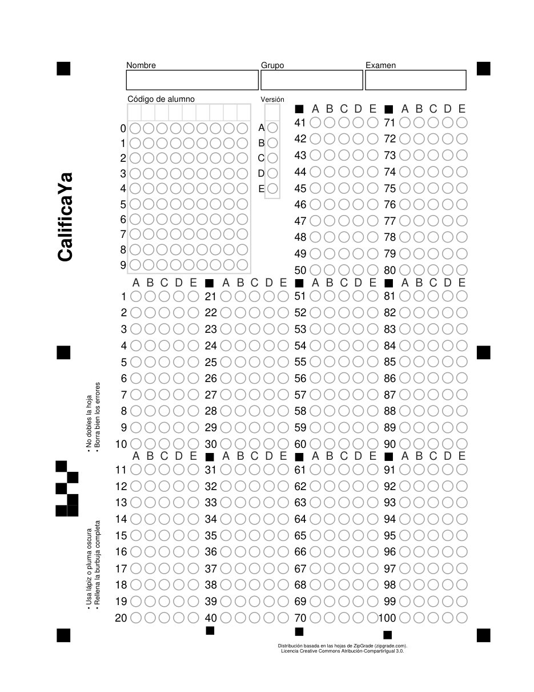
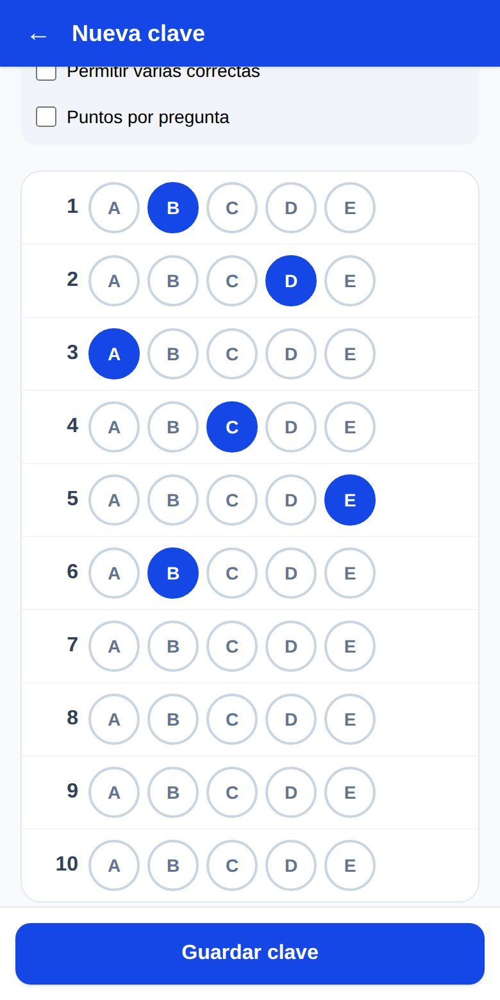
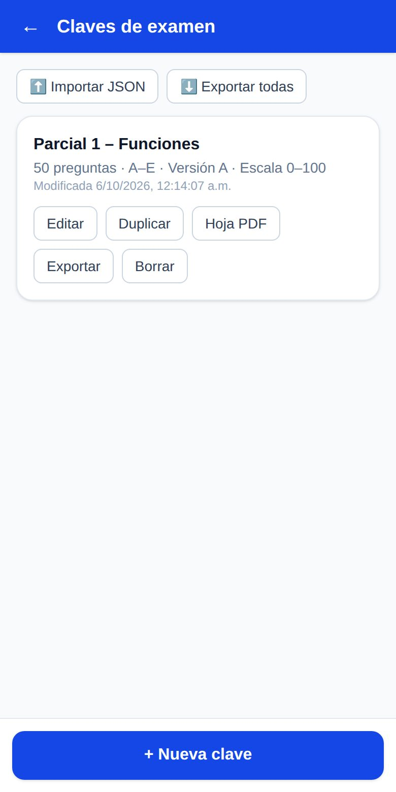
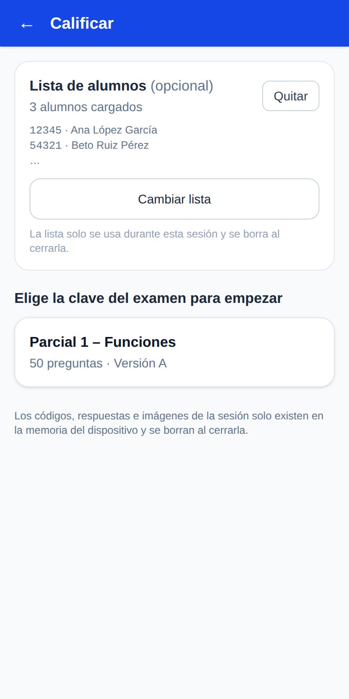
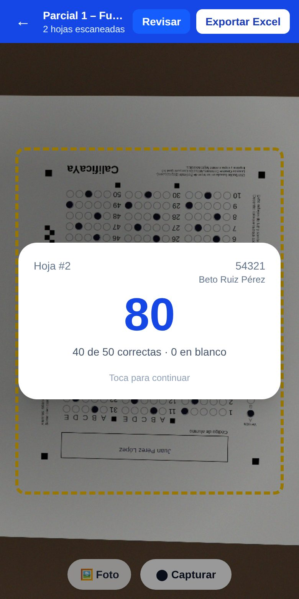
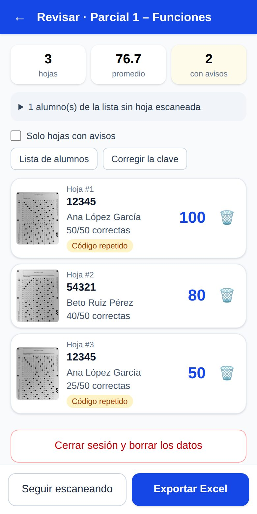
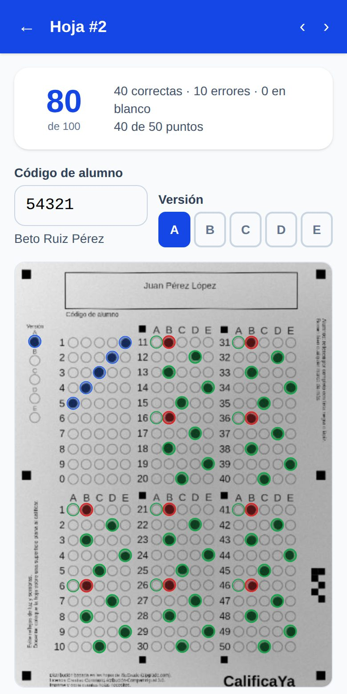

Califica exámenes de opción múltiple con la cámara de tu celular y obtén tus calificaciones en Excel en minutos.

| Hoja | Código del alumno |
|---|---|
| 20 preguntas | No trae. Identificas al alumno por su nombre al revisar. |
| 50 preguntas | 5 dígitos |
| 100 preguntas | 9 dígitos (como el código UdeG) |








| Pestaña del Excel | Qué contiene |
|---|---|
| Resultados | Código, nombre, aciertos, errores, en blanco, puntos y calificación de 0 a 10 y de 0 a 100. Los alumnos de tu lista que no presentaron salen al final. |
| Respuestas | Lo que contestó cada alumno: verde si es correcta, rojo si es incorrecta, gris en blanco. |
| Análisis por reactivo | Porcentaje del grupo que acertó cada pregunta. Las difíciles (menos de 40 %) salen en rojo. Al final: promedio, mediana, máximo, mínimo y desviación estándar. |
| Clave | Las respuestas correctas que usaste. |
No. Solo para instalar y activar la primera vez. Cuando tengas internet, la app revisa tu licencia sola cada mes, sin que hagas nada.
Pasaron muchos días sin internet. Conéctate a wifi o datos un momento y toca Reintentar.
Revisa que se vean los cuadros negros de las esquinas, que haya buena luz y que la hoja no esté arrugada. También puedes tocar 🖼️ Foto y elegir una foto ya tomada.
La app marca esa pregunta como dudosa para que la revises en el paso 6.
Es normal: vuelve a escribir tu código. Cuenta como un dispositivo más.
Sí. La app lee tanto las hojas de CalificaYa como las originales de ZipGrade.
No. Todo se queda en tu celular y al cerrar la sesión se borra. Lo único que se envía es tu código de licencia, para comprobar que es válido.
En ⚙️ Ajustes. Ahí también está el correo de soporte.